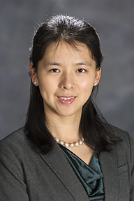

Dr. Yi Gu
Associate Professor KOM 324D (Kirksey Old Main Building) Department of Computer Science Middle Tennessee State University Murfreesboro, TN 37132 Email: Yi.Gu<at>mtsu.edu Phone: (615) 904-8238|  |
Dr. Yi Gu Associate Professor KOM 324D (Kirksey Old Main Building) Department of Computer Science Middle Tennessee State University Murfreesboro, TN 37132 Email: Yi.Gu<at>mtsu.edu Phone: (615) 904-8238 |
|
| |
||
|
|
|
Page updating... Under
Review 1) (Subcontractor) “ExamMaker:
Automated USW Knowledge Base Extraction and Exam Maker
using Advanced Transformer-based NLP Models”, DoD
Small Business Innovation Research (SBIR) and Small
Business Technology Transfer (STTR) Program: N23A-T014:
DIGITAL ENGINEERING - Automated Knowledge Base
Extraction and Student Assessment. (Prepared as Co-PI
but changed to subcontractor during the submission due
to the requirement of citizenship for PI/Co-PI), 2023. Funded 2)
(PI)
“Increasing Success and Retention of Female Students
in Computer Science by Enhancing Two Key Factors: Math
Proficiency and Programming Skills”, Tennessee Board
of Regents Student Engagement, Retention, and Success
Initiative (TBR-SERS), $33,020.84, 07/01/2022 –
06/30/2023. 3) (PI)
“Energy Efficiency for Big Data Sciences in Cloud
Environments”, Faculty Research and Creative Activity
Grant (FRCAC), Middle Tennessee State University,
$10,000, 06/01/2018 – 12/31/2018. 4) (PI) NSF CSR: Small:
Collaborative Research: An Integrated Approach to
Performance Modeling and Optimization of Big-data
Scientific Workflows, $125,000, 10/01/2015 –
09/30/2018. 5) (PI) “Performance Modeling
and Optimization of Big Data Scientific Workflows in
Distributed Network Environments”, Faculty Research
and Creative Activity Grant (FRCAC), Middle Tennessee
State University, $7,268, 01/20/2015 – 08/31/2015. 6) (Co-PI) National Science
Foundation of China (NSFC), “Transport Control to
Provide Deadline-sensitive Services”, Guangxi
University, Nanning, P. R. China, RMB 450,000 (total),
01/01/2015 – 12/31/2018. 7) (PI) Technology Awards from the Faculty Research & Development program, University of Tennessee at Martin, PI, $1,000, 3/2/2012 – 4/9/2012.
Not
Funded 8) (Senior Personnel) “REU
Site: Interdisciplinary Collaborative Robot for
Agricultural Engineering”, NSF Research Experiences
for Undergraduates (REU), 2022. 9) “Workflow Scheduling and Optimization for Big
Data Sciences in Clouds”, Google Faculty Research
Awards Program, 2019. 10) (Co-PI) NSF STEM+C:EI:
Computational Biology for Algorithmic Thinking (CBAT),
$650,000, 2015. 11)
(Co-PI)
NSF BIGDATA:F:DKM: Collaborative Research: Performance
modeling and optimization of large-scale workflows for
big data science, $306,566, 2015. 12) (Co-PI) “Development of
Predictive Analytic Tool for Student Retention using
Statistical and Machine Learning Approaches”, $39,160,
Tennessee Board of Regents, 2014. 13) (PI) NSF CSR: Small: Collaborative Research: Performance modeling and optimization of large-scale distributed workflows for big data science, $158,980, 2014.
|
Home | Teaching | Publication | Grant | Miscellaneous